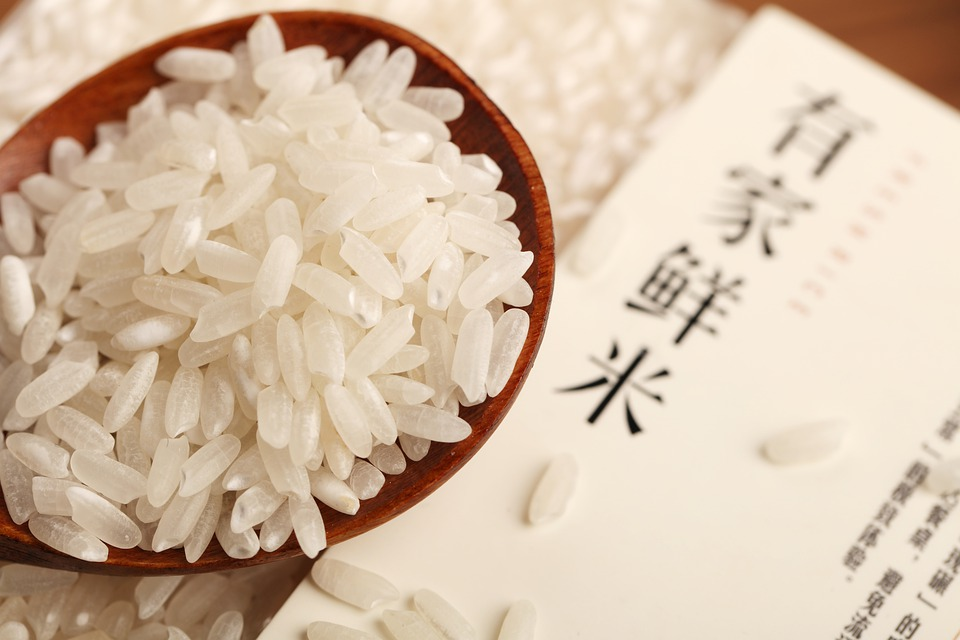
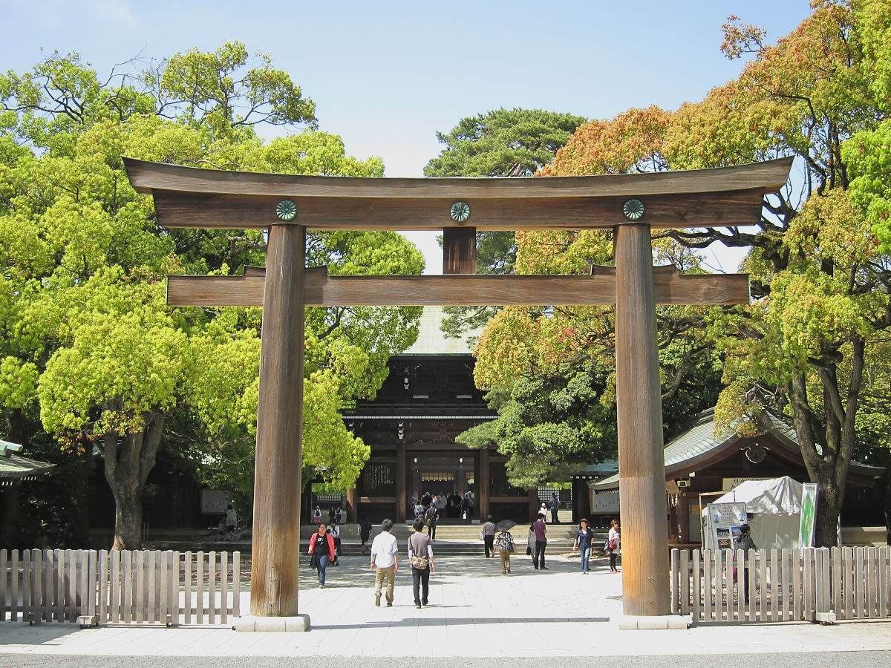

Ramen: Uno de los platos más típicos de este país, es una sopa que se sirve en un cuenco de madera junto a carne cocida (usualmente ternera) y verduras variadas.
Sushi: Piezas pequeñas de unos 4 cm de largo y 2 de ancho que se compone de arroz blanco cocido y macerado con aceite y vinagre, y diferentes pescados crudos como atún o salmón.

Arroz: Alimento más típico de todo el continente asiático, que se consume de muchos tipos de formas.
Platos en tempura: fritura rápida de alimentos como verduras o pescados típica de Asia oriental.
MONUMENTOS

Pasa por una puerta ancestral de ciprés y contempla una boda Shinto en el SANTUARIO DE MEIJI JINGU en Shibuya.
Compra entradas para ver Asakusa desde una altura récord en la torre TOKYO SKYTREE.
Échate una carrera con miles de locales en la intersección del CRUCE DE SHIBUYA.
Saborea las vistas panorámicas de Minato desde el mirador de la TORRE DE TOKIO.
TRADICIONES
Baños termales y baños públicos, bañarse en los baños públicos y baños termales onsen es una parte integral del estilo de vida japonés y no deberías perderte la oportunidad de sumergirte en la verdadera cultura japonesa.
Fumar, Los restaurantes y cafés en Tokio cuentan con distintas políticas sobre fumar. En algunos está permitido fumar, mientras que en otros está completamente prohibido. También hay establecimientos que cuentan con zonas designadas para fumadores y zonas para no fumadores.
En el tren, las estaciones de Tokio están impecablemente organizadas, con un estilo que se ajusta a su inigualable sistema ferroviario.
Bicicletas, alquilar una bicicleta es un modo divertido e interesante de explorar la ciudad y cada vez existen más opciones para alquilar.